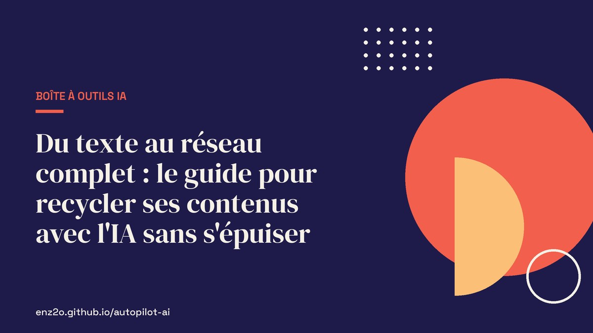

Du texte au réseau complet : le guide pour recycler ses contenus avec l'IA sans s'épuiser
2026-11-16
Article contenant des liens affiliés.

Produire régulièrement du contenu pour trouver des clients, se faire connaître ou valider un projet d'études demande une quantité d'énergie considérable. Pour un freelance, un étudiant ou un créateur solo, le danger principal n'est pas le manque d'idées, mais l'épuisement opérationnel. Rédiger un dossier complet ou un article de fond prend déjà du temps ; repartir à zéro pour créer un post LinkedIn, un script vidéo ou une newsletter devient vite insoutenable.
La clé pour sortir de cet engrenage ne consiste pas à travailler deux fois plus, mais à adopter une stratégie de recyclage de contenu (content repurposing) dopée à l'intelligence artificielle. En utilisant judicieusement des logiciels gratuits ou freemium, vous pouvez transformer une seule ressource initiale en un écosystème complet de diffusion multicanale.
Voici le guide pas à pas pour structurer ce workflow, économiser des dizaines d'heures chaque mois et diffuser votre expertise sans débourser un centime.
1. Concevoir le contenu « Noyau » : votre base stratégique
Avant de solliciter l'intelligence artificielle pour démultiplier vos messages, vous devez partir d'une matière première de qualité. C'est ce qu'on appelle le contenu « Noyau » (ou pillar content). Il peut s'agir d'un article de blog fouillé, d'une étude de cas, d'un compte-rendu de projet ou d'un cours synthétisé.
Comment l'IA accélère cette première phase ?
- La recherche et le plan : Utilisez les modèles de langage gratuits (comme ChatGPT, Claude ou Gemini) pour structurer vos idées. Soumettez votre idée de départ et demandez à l'outil de vous proposer trois structures de plans axées sur la résolution d'un problème concret.
- La clarification : Rédigez votre texte principal sans vous soucier de la perfection style. Demandez ensuite à l'IA d'éliminer les lourdeurs, d'améliorer la fluidité et de repérer les manques de clarté.
Conseil d'installation : Passer plusieurs heures à concevoir vos sujets de fond demande de l'endurance. Pensez à votre confort visuel et postural en utilisant un support ordinateur portable ergonomique pour maintenir votre écran à hauteur des yeux et réduire la fatigue cervicale.
2. Décliner le texte en 5 formats distincts grâce à l'IA
Une fois votre texte noyau rédigé (idéalement entre 800 et 1 200 mots), ne commettez pas l'erreur de le publier tel quel avant de passer au sujet suivant. C'est à cet instant précis que le recyclage assisté par l'IA prend tout son sens.
Format A : Le carrousel pédagogique
Demandez à l'IA de synthétiser les concepts clés de votre texte sous forme d'étapes visuelles. Vous pouvez copier-coller votre texte et utiliser une consigne (prompt) très simple :
« Analyse ce texte et extrais 5 enseignements majeurs. Présente-les sous la forme de 6 diapos très courtes (Slide 1 : Titre accrocheur, Slides 2 à 5 : Conseils concis, Slide 6 : Conclusion). »
Il vous suffit ensuite d'importer ces phrases dans un modèle gratuit de Canva pour obtenir un carrousel prêt à publier.
Format B : La newsletter engageante
Pour votre lettre d'information, l'objectif n'est pas de faire un simple copier-coller. Demandez à l'IA d'adopter un ton plus confidentiel et direct. Elle peut extraire l'anecdote ou la leçon principale de votre texte et formuler une introduction accrocheuse qui invite votre lecteur à vous répondre.
Format C : Les messages synthétiques pour réseaux sociaux
Ici, la concision prime. Demandez à l'IA de repérer les phrases chocs (punchlines), les données marquantes ou d'en faire un thread structuré. En quelques secondes, vous obtenez la matière pour alimenter vos comptes pendant plusieurs jours.
Format D : Le script pour format court (Reels, TikTok, Shorts)
Consultez la section la plus dynamique de votre article de base et demandez à l'IA de la réécrire sous la forme d'un script vidéo de 45 secondes. Précisez-lui de structurer le texte avec une accroche (hook) dans les 3 premières secondes, un développement rapide en 3 points et un appel à l'action précis.
3. Capturer et convertir l'audience avec un stack 100 % gratuit
Générer de la visibilité sur les réseaux sociaux grâce au recyclage IA est efficace, mais cette attention reste éphémère si vous ne la canalisez pas. En tant que freelance ou créateur de contenu, votre objectif ultime est de faire repérer votre travail par des prospects ou de constituer un fichier d'abonnés qualifiés.
Pour centraliser vos prospects sans accumuler les abonnements logiciels payants, il est judicieux de s'appuyer sur une plateforme tout-en-un disposant d'un plan gratuit pérenne.
Grâce à l'offre gratuite de Systeme.io, vous pouvez mettre en place l'ensemble de votre dispositif d'acquisition sans frais : héberger une page de capture épurée, distribuer automatiquement un guide ou une checklist générée avec l'aide de l'IA, et programmer votre séquence d'e-mails de bienvenue.
Cette approche évite d'avoir à connecter plusieurs outils entre eux et permet aux freelances comme aux étudiants de lancer une présence professionnelle crédible immédiatement.
4. Structurer son organisation quotidienne
La multiplicité des outils freemium et des déclinaisons de contenu peut paradoxalement créer de la confusion si elle n'est pas cadrée par une méthode rigoureuse.
- Un tableau de suivi unique : Centralisez vos idées et l'avancement de vos déclinaisons sur un tableau gratuit (Notion ou Trello). Définissez des colonnes simples : Noyau à rédiger > Déclinaisons IA générées > Visuels prêts > Programmé.
- Le travail par blocs de temps : Bloquez une session de 2 heures par semaine pour rédiger le contenu noyau et générer toutes ses déclinaisons IA. Pour maintenir une concentration maximale pendant ces sessions intenses, veillez à travailler dans un espace bien ordonné et éclairé par une lampe de bureau LED réglable pour éviter la fatigue oculaire.
- Automatisations clés : Configurez vos formulaires de capture sur Systeme.io pour qu'un nouveau prospect intègre directement votre liste d'abonnés dès qu'il télécharge l'une de vos ressources gratuites.
5. Garder la main : l'importance de l'édition humaine
Si l'intelligence artificielle fait gagner un temps précieux lors de la reformulation et du découpage de vos textes, la valeur finale repose toujours sur votre regard critique.
- Injectez votre style : L'IA a tendance à utiliser des structures de phrases prévisibles. Reprenez systématiquement les textes générés pour y insuffler vos expressions, vos tournures et vos anecdotes personnelles.
- Vérifiez les faits : Même à partir de votre texte d'origine, un modèle de langage peut déformer une donnée ou ajouter un détail inexact lors de la réécriture. Une relecture attentive reste obligatoire.
- Pensez valeur avant quantité : Ne déclinez pas un contenu en dix formats si trois d'entre eux n'apportent aucun bénéfice réel à votre audience. Privilégiez la pertinence du message sur le volume de publications.
Déployer votre écosystème dès aujourd'hui
Construire une visibilité solide et capturer des prospects quand on travaille seul ne nécessite pas des investissements financiers importants. En vous appuyant sur la méthode du recyclage stratégique et sur un stack d'outils freemium performants, vous transformez un simple effort de rédaction en un moteur de croissance continu.
Prenez dès cette semaine votre texte le plus abouti ou votre dernier projet professionnel, utilisez l'IA pour en extraire trois déclinaisons ciblées, et installez vos premiers outils de capture pour pérenniser votre activité.